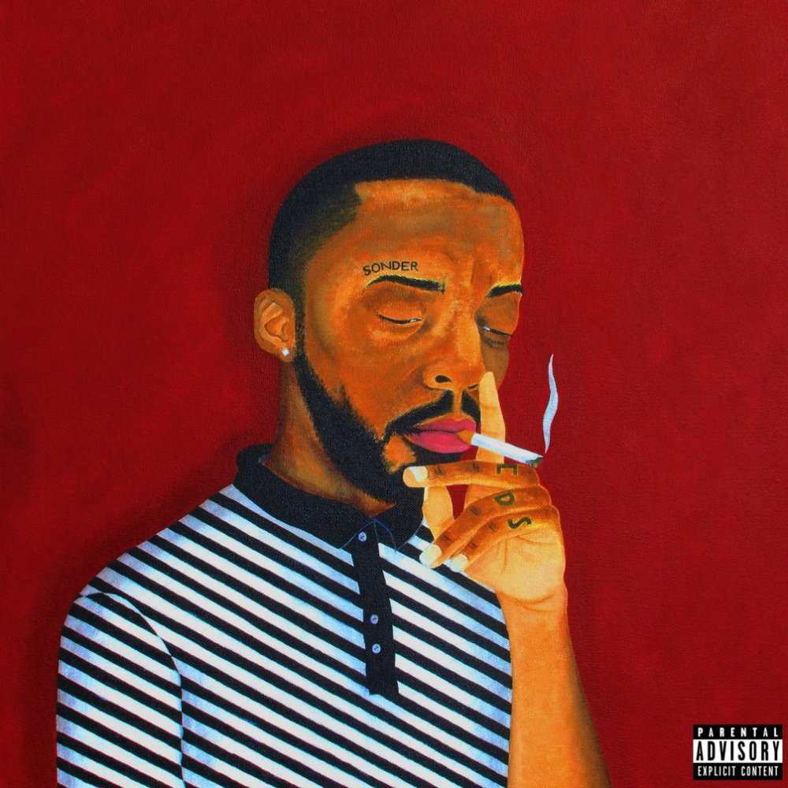
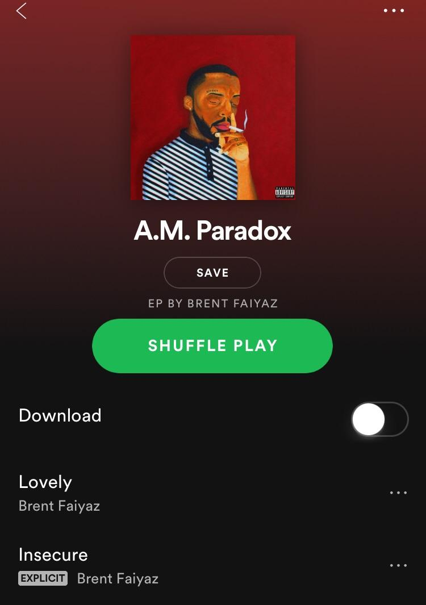

A.M Paradox 2017
When end of the year lists are done for 2016 and people start naming their favorites and “Rookies of the Year,” Brent Faiyaz might want to make your list.
The Maryland-made but L.A.-based triple threat writer-singer-producer has had arguably a breakout year, first unveiling himself with “Poison” (which we featured in our “The Pulse” segment) and then contributing to bringing soul back to RnB by serving as one-third of the music group, Sonder. On Tuesday (his 21st birthday), Faiyaz went one step further, by releasing his debut EP, A.M. Paradox.
Unsurprisingly, Faiyaz’s breakout single, “Poison,” is amongst A.M.’s five tracks. On the production front, Paradox bears assists help from Ben Free, Sonder, Pablo Dylan, James Harte and Paperboy Fabe on the boards. And with a run time of just over twenty minutes, the EP milks every single second with an array of beautiful sounds.
Brent Faiyaz’s strength is his falsetto. It’s what allows him to float over the guitar strums and lush layered instrumentation of intro track “Lovely,” the singer’s voice dripping pure admiration as he sings, “Look at you now” when he takes in all of his lover visually. It’s what allows him to begin off standout cut “Insecure” as just gentle musings before letting his high note go to work on the track’s hook.
